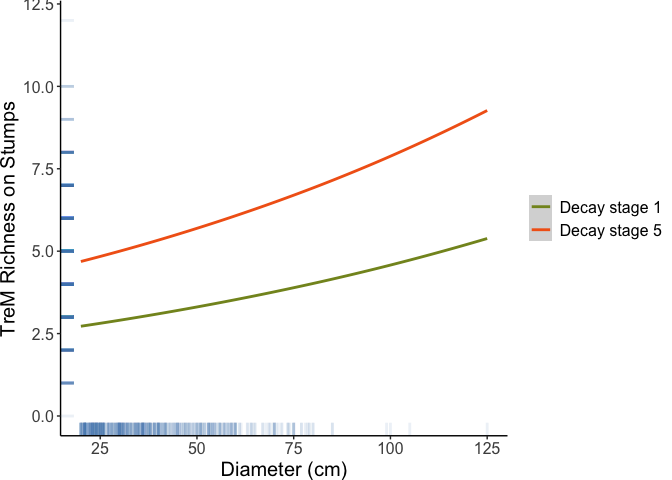

This is the companion code and data to Jovanovic et al. 2025.
Installation
You can install the development version of jovanovic2025 from GitHub with:
# install.packages("pak")
pak::pak("pandionlabs/jovanovic2025")Example
Load the package like this:
# Import the data from a tab delimited ascii file.
# MasterThesisData <- read.table(
# file = "data/raw/MasterThesisData2024.csv",
# header = TRUE,
# sep = ",",
# na.strings = "NA",
# stringsAsFactors = TRUE,
# dec = "."
# )
# Import the data with MasterThesisData2024
TreMs <- clean_data(MasterThesisData2024)
TreeIdentitiesSummary <- summarize_identities(
TreMs,
grouping_variable = TreeIdentities2
)
# write.table(TreeIdentitiesSummary, file = "data/derivatives/TreeIdentitiesSummary.csv", sep = ",", quote = FALSE, row.names = FALSE)
DeadwoodIdentitiesGroupedSummary <- summarize_identities(
TreMs,
grouping_variable = DeadwoodIdentitiesGrouped
)
# write.table(DeadwoodIdentitiesGroupedSummary, file = "data/derivatives/DeadwoodIdentitiesGroupedSummary.csv", sep = ",", quote = FALSE, row.names = FALSE)| TreeIdentities2 | Freq | Percentage | Treedata.DBH_cm.mean | Treedata.DBH_cm.sd | Treedata.DBH_cm.min | Treedata.DBH_cm.max | Abundance.mean | Abundance.sd | Abundance.max | Richness.mean | Richness.sd | Richness.max |
|---|---|---|---|---|---|---|---|---|---|---|---|---|
| Broadleaf Log/Entire Tree | 7 | 1.3133208 | 32.92857 | 10.320968 | 23.4 | 49.8 | 4.571429 | 3.5050983 | 12 | 3.571429 | 1.5118579 | 6 |
| Broadleaf Stump | 2 | 0.3752345 | 46.15000 | 11.525840 | 38.0 | 54.3 | 7.500000 | 0.7071068 | 8 | 6.500000 | 0.7071068 | 7 |
| Conifer Log/Entire Tree | 313 | 58.7242026 | 32.56550 | 10.787167 | 20.0 | 73.5 | 7.453674 | 7.2817779 | 86 | 4.578275 | 1.8983227 | 12 |
| Conifer Stump | 194 | 36.3977486 | 49.50670 | 17.510500 | 21.0 | 125.0 | 6.634021 | 3.3739443 | 22 | 4.917526 | 1.7074667 | 10 |
| No ID Log/Entire Tree | 5 | 0.9380863 | 27.36000 | 7.867846 | 20.3 | 39.0 | 4.600000 | 1.3416408 | 6 | 3.800000 | 1.3038405 | 6 |
| No ID Stump | 12 | 2.2514071 | 50.69167 | 18.746416 | 34.8 | 105.0 | 5.500000 | 1.5666989 | 9 | 4.500000 | 1.0871146 | 6 |
| DeadwoodIdentitiesGrouped | Freq | Percentage | Treedata.DBH_cm.mean | Treedata.DBH_cm.sd | Treedata.DBH_cm.min | Treedata.DBH_cm.max | Abundance.mean | Abundance.sd | Abundance.max | Richness.mean | Richness.sd | Richness.max |
|---|---|---|---|---|---|---|---|---|---|---|---|---|
| A. alba Log/Entire Tree | 46 | 8.6303940 | 35.34565 | 10.404715 | 20.9 | 59.7 | 8.043478 | 5.8687743 | 31 | 4.826087 | 1.8415494 | 8 |
| A. alba Stump | 12 | 2.2514071 | 49.09167 | 12.577719 | 34.0 | 75.0 | 5.666667 | 3.0251471 | 11 | 4.666667 | 2.0150946 | 9 |
| Broadleaf Log/Entire Tree | 7 | 1.3133208 | 32.92857 | 10.320968 | 23.4 | 49.8 | 4.571429 | 3.5050983 | 12 | 3.571429 | 1.5118579 | 6 |
| Broadleaf Stump | 2 | 0.3752345 | 46.15000 | 11.525840 | 38.0 | 54.3 | 7.500000 | 0.7071068 | 8 | 6.500000 | 0.7071068 | 7 |
| Conifer Log/Entire Tree | 26 | 4.8780488 | 32.29615 | 14.722948 | 20.0 | 70.0 | 5.923077 | 4.0784612 | 17 | 4.269231 | 1.5114944 | 8 |
| Conifer Stump | 36 | 6.7542214 | 47.50000 | 16.227543 | 24.0 | 80.0 | 5.944444 | 2.6826900 | 15 | 4.916667 | 1.3174651 | 7 |
| F. sylvatica Log/Entire Tree | 49 | 9.1932458 | 32.52041 | 10.319722 | 20.0 | 57.5 | 9.367347 | 13.3474309 | 86 | 4.795918 | 1.8025398 | 10 |
| F. sylvatica Stump | 37 | 6.9418386 | 48.18649 | 14.401006 | 21.0 | 79.0 | 7.513514 | 3.1852230 | 16 | 5.594595 | 1.4806053 | 8 |
| No ID Log/Entire Tree | 5 | 0.9380863 | 27.36000 | 7.867846 | 20.3 | 39.0 | 4.600000 | 1.3416408 | 6 | 3.800000 | 1.3038405 | 6 |
| No ID Stump | 12 | 2.2514071 | 50.69167 | 18.746416 | 34.8 | 105.0 | 5.500000 | 1.5666989 | 9 | 4.500000 | 1.0871146 | 6 |
| P. abies Log/Entire Tree | 192 | 36.0225141 | 31.94740 | 10.352878 | 20.0 | 73.5 | 7.031250 | 5.4800029 | 36 | 4.505208 | 1.9815838 | 12 |
| P. abies Stump | 109 | 20.4502814 | 50.66330 | 19.340280 | 22.5 | 125.0 | 6.669725 | 3.6287306 | 22 | 4.715596 | 1.8160383 | 10 |
Make a count table by decay stage
count_table <- make_count_table_by_decay(
TreMs,
save_name = "data/derivatives/Count_Table_by_Decay_Stage.csv"
)Create models
In the create models section, we build a series of models associating various predictor (y) variables with three varialbes: GroupedTreeSpecies, Treedata.DBH_cm, and Treedata.Tree_Decay. The modelling family for each model is either poisson or glmmTMB::nbinom2.
The get_model_cols() function creates a tibble that specifies each predictor variable and the model family used in each model
model_parameters <- get_model_cols()| variable | model_family | model_formula |
|---|---|---|
| DecomposedCrack | poisson | DecomposedCrack ~ GroupedTreeSpecies + Treedata.DBH_cm + Treedata.Tree_Decay + (1|Plot) |
| WoodpeckerCavities | poisson | WoodpeckerCavities ~ GroupedTreeSpecies + Treedata.DBH_cm + Treedata.Tree_Decay + (1|Plot) |
| Concavities | poisson | Concavities ~ GroupedTreeSpecies + Treedata.DBH_cm + Treedata.Tree_Decay + (1|Plot) |
| WoodpeckerConcavities | poisson | WoodpeckerConcavities ~ GroupedTreeSpecies + Treedata.DBH_cm + Treedata.Tree_Decay + (1|Plot) |
| Rotholes | poisson | Rotholes ~ GroupedTreeSpecies + Treedata.DBH_cm + Treedata.Tree_Decay + (1|Plot) |
| InsectGalleries | poisson | InsectGalleries ~ GroupedTreeSpecies + Treedata.DBH_cm + Treedata.Tree_Decay + (1|Plot) |
| ExposedSapwood | poisson | ExposedSapwood ~ GroupedTreeSpecies + Treedata.DBH_cm + Treedata.Tree_Decay + (1|Plot) |
| ExposedHeartwood | poisson | ExposedHeartwood ~ GroupedTreeSpecies + Treedata.DBH_cm + Treedata.Tree_Decay + (1|Plot) |
| ExposedSapwoodHeartwood | poisson | ExposedSapwoodHeartwood ~ GroupedTreeSpecies + Treedata.DBH_cm + Treedata.Tree_Decay + (1|Plot) |
| PerennialFungi | poisson | PerennialFungi ~ GroupedTreeSpecies + Treedata.DBH_cm + Treedata.Tree_Decay + (1|Plot) |
| Ephermalfungi | poisson | Ephermalfungi ~ GroupedTreeSpecies + Treedata.DBH_cm + Treedata.Tree_Decay + (1|Plot) |
| EphrmalPerennialFungi | poisson | EphrmalPerennialFungi ~ GroupedTreeSpecies + Treedata.DBH_cm + Treedata.Tree_Decay + (1|Plot) |
| Epiphytes | poisson | Epiphytes ~ GroupedTreeSpecies + Treedata.DBH_cm + Treedata.Tree_Decay + (1|Plot) |
| DeadwooodShelter | poisson | DeadwooodShelter ~ GroupedTreeSpecies + Treedata.DBH_cm + Treedata.Tree_Decay + (1|Plot) |
| StumpStructures | poisson | StumpStructures ~ GroupedTreeSpecies + Treedata.DBH_cm + Treedata.Tree_Decay + (1|Plot) |
| DeadwooodShelterStumpStructures | poisson | DeadwooodShelterStumpStructures ~ GroupedTreeSpecies + Treedata.DBH_cm + Treedata.Tree_Decay + (1|Plot) |
| LogStructures | poisson | LogStructures ~ GroupedTreeSpecies + Treedata.DBH_cm + Treedata.Tree_Decay + (1|Plot) |
| WoodyDebris | poisson | WoodyDebris ~ GroupedTreeSpecies + Treedata.DBH_cm + Treedata.Tree_Decay + (1|Plot) |
| ExposedRoots | poisson | ExposedRoots ~ GroupedTreeSpecies + Treedata.DBH_cm + Treedata.Tree_Decay + (1|Plot) |
| Abundance | poisson | Abundance ~ GroupedTreeSpecies + Treedata.DBH_cm + Treedata.Tree_Decay + (1|Plot) |
| Richness | poisson | Richness ~ GroupedTreeSpecies + Treedata.DBH_cm + Treedata.Tree_Decay + (1|Plot) |
| DecomposedCrack | glmmTMB::nbinom2 | DecomposedCrack ~ GroupedTreeSpecies + Treedata.DBH_cm + Treedata.Tree_Decay + (1|Plot) |
| WoodpeckerCavities | glmmTMB::nbinom2 | WoodpeckerCavities ~ GroupedTreeSpecies + Treedata.DBH_cm + Treedata.Tree_Decay + (1|Plot) |
| Concavities | glmmTMB::nbinom2 | Concavities ~ GroupedTreeSpecies + Treedata.DBH_cm + Treedata.Tree_Decay + (1|Plot) |
| WoodpeckerConcavities | glmmTMB::nbinom2 | WoodpeckerConcavities ~ GroupedTreeSpecies + Treedata.DBH_cm + Treedata.Tree_Decay + (1|Plot) |
| Rotholes | glmmTMB::nbinom2 | Rotholes ~ GroupedTreeSpecies + Treedata.DBH_cm + Treedata.Tree_Decay + (1|Plot) |
| InsectGalleries | glmmTMB::nbinom2 | InsectGalleries ~ GroupedTreeSpecies + Treedata.DBH_cm + Treedata.Tree_Decay + (1|Plot) |
| ExposedSapwood | glmmTMB::nbinom2 | ExposedSapwood ~ GroupedTreeSpecies + Treedata.DBH_cm + Treedata.Tree_Decay + (1|Plot) |
| ExposedHeartwood | glmmTMB::nbinom2 | ExposedHeartwood ~ GroupedTreeSpecies + Treedata.DBH_cm + Treedata.Tree_Decay + (1|Plot) |
| ExposedSapwoodHeartwood | glmmTMB::nbinom2 | ExposedSapwoodHeartwood ~ GroupedTreeSpecies + Treedata.DBH_cm + Treedata.Tree_Decay + (1|Plot) |
| PerennialFungi | glmmTMB::nbinom2 | PerennialFungi ~ GroupedTreeSpecies + Treedata.DBH_cm + Treedata.Tree_Decay + (1|Plot) |
| Ephermalfungi | glmmTMB::nbinom2 | Ephermalfungi ~ GroupedTreeSpecies + Treedata.DBH_cm + Treedata.Tree_Decay + (1|Plot) |
| EphrmalPerennialFungi | glmmTMB::nbinom2 | EphrmalPerennialFungi ~ GroupedTreeSpecies + Treedata.DBH_cm + Treedata.Tree_Decay + (1|Plot) |
| Epiphytes | glmmTMB::nbinom2 | Epiphytes ~ GroupedTreeSpecies + Treedata.DBH_cm + Treedata.Tree_Decay + (1|Plot) |
| DeadwooodShelter | glmmTMB::nbinom2 | DeadwooodShelter ~ GroupedTreeSpecies + Treedata.DBH_cm + Treedata.Tree_Decay + (1|Plot) |
| StumpStructures | glmmTMB::nbinom2 | StumpStructures ~ GroupedTreeSpecies + Treedata.DBH_cm + Treedata.Tree_Decay + (1|Plot) |
| DeadwooodShelterStumpStructures | glmmTMB::nbinom2 | DeadwooodShelterStumpStructures ~ GroupedTreeSpecies + Treedata.DBH_cm + Treedata.Tree_Decay + (1|Plot) |
| LogStructures | glmmTMB::nbinom2 | LogStructures ~ GroupedTreeSpecies + Treedata.DBH_cm + Treedata.Tree_Decay + (1|Plot) |
| WoodyDebris | glmmTMB::nbinom2 | WoodyDebris ~ GroupedTreeSpecies + Treedata.DBH_cm + Treedata.Tree_Decay + (1|Plot) |
| ExposedRoots | glmmTMB::nbinom2 | ExposedRoots ~ GroupedTreeSpecies + Treedata.DBH_cm + Treedata.Tree_Decay + (1|Plot) |
| Abundance | glmmTMB::nbinom2 | Abundance ~ GroupedTreeSpecies + Treedata.DBH_cm + Treedata.Tree_Decay + (1|Plot) |
| Richness | glmmTMB::nbinom2 | Richness ~ GroupedTreeSpecies + Treedata.DBH_cm + Treedata.Tree_Decay + (1|Plot) |
The models can be produced with create_models() which will create each of the models specified in get_model_cols() and then save the model summary, residuals, and results from three tests of outliers, dispersion, and zero inflation. All these models are results are returned as a dataframe.
mod_df <- create_models(TreMs)Access results of those models with the following
get_formula(mod_df, 1)
#>
#> ── Formula ─────────────────────────────────────────────────────────────────────
#> glmmTMB::glmmTMB(formula = DecomposedCrack ~ GroupedTreeSpecies +
#> Treedata.DBH_cm + Treedata.Tree_Decay + (1 | Plot), data = TreMs, family =
#> model_family, ziformula = ~0, dispformula = ~1)
get_residuals(mod_df, 1)
#>
#> ── Model residuals ─────────────────────────────────────────────────────────────
#> Object of Class DHARMa with simulated residuals based on 250 simulations with refit = FALSE . See ?DHARMa::simulateResiduals for help.
#>
#> Scaled residual values: 0.9390666 0.8147907 0.8719091 0.08886054 0.7079871 0.9811869 0.01226094 0.8598661 0.1109746 0.9110544 0.5304764 0.3844352 0.7634829 0.4438318 0.1093142 0.5528625 0.2022903 0.2578379 0.1234604 0.6637486 ...
get_test_outliers(mod_df, 1)
#>
#> ── Model outliers ──────────────────────────────────────────────────────────────
#> [[1]]
#>
#> DHARMa outlier test based on exact binomial test with approximate
#> expectations
#>
#> data: purrr::pluck(mod_residuals, 1)
#> outliers at both margin(s) = 1, observations = 516, p-value = 0.2047
#> alternative hypothesis: true probability of success is not equal to 0.007968127
#> 95 percent confidence interval:
#> 4.906432e-05 1.075005e-02
#> sample estimates:
#> frequency of outliers (expected: 0.00796812749003984 )
#> 0.001937984
get_test_dispersion(mod_df, 1)
#>
#> ── Model dispersion ────────────────────────────────────────────────────────────
#> [[1]]
#>
#> DHARMa nonparametric dispersion test via sd of residuals fitted vs.
#> simulated
#>
#> data: simulationOutput
#> dispersion = 0.82723, p-value = 0.864
#> alternative hypothesis: two.sided
get_test_zero_inflation(mod_df, 1)
#>
#> ── Model zero inflation ────────────────────────────────────────────────────────
#> [[1]]
#>
#> DHARMa zero-inflation test via comparison to expected zeros with
#> simulation under H0 = fitted model
#>
#> data: simulationOutput
#> ratioObsSim = 0.99962, p-value = 1
#> alternative hypothesis: two.sidedGet models
We can delve into the model dataframe (mod_df) with get_model_object
# Get a model object by index
get_model_object(mod_df, 2)
#> Formula:
#> WoodpeckerCavities ~ GroupedTreeSpecies + Treedata.DBH_cm + Treedata.Tree_Decay +
#> (1 | Plot)
#> Data: TreMs
#> AIC BIC logLik -2*log(L) df.resid
#> 80.23619 114.20505 -32.11810 64.23619 508
#> Random-effects (co)variances:
#>
#> Conditional model:
#> Groups Name Std.Dev.
#> Plot (Intercept) 0.7388
#>
#> Number of obs: 516 / Conditional model: Plot, 23
#>
#> Fixed Effects:
#>
#> Conditional model:
#> (Intercept) GroupedTreeSpeciesConiferous spp.
#> -21.73522 20.26271
#> Treedata.DBH_cm Treedata.Tree_DecayDecay stage 2
#> -0.03006 -2.39513
#> Treedata.Tree_DecayDecay stage 3 Treedata.Tree_DecayDecay stage 4
#> -1.35112 -2.06083
#> Treedata.Tree_DecayDecay stage 5
#> -26.27206
# Or get a model object using filter
mod_df |>
dplyr::filter(
variable == "Rotholes",
model_family == "poisson"
) |>
get_model_object()
#> Formula:
#> Rotholes ~ GroupedTreeSpecies + Treedata.DBH_cm + Treedata.Tree_Decay +
#> (1 | Plot)
#> Data: TreMs
#> AIC BIC logLik -2*log(L) df.resid
#> 469.8742 503.8431 -226.9371 453.8742 508
#> Random-effects (co)variances:
#>
#> Conditional model:
#> Groups Name Std.Dev.
#> Plot (Intercept) 0.7648
#>
#> Number of obs: 516 / Conditional model: Plot, 23
#>
#> Fixed Effects:
#>
#> Conditional model:
#> (Intercept) GroupedTreeSpeciesConiferous spp.
#> -0.28891 -0.72677
#> Treedata.DBH_cm Treedata.Tree_DecayDecay stage 2
#> -0.01155 -0.85454
#> Treedata.Tree_DecayDecay stage 3 Treedata.Tree_DecayDecay stage 4
#> -0.44195 -0.97527
#> Treedata.Tree_DecayDecay stage 5
#> -1.32795Make a graph
Use ggeffects to predict on a model and then graph it with ggplot.
Predicted_RichnessStump <-
mod_df |>
dplyr::filter(
variable == "Richness",
model_family == "nbinom2"
) |>
get_model_object() |>
ggeffects::ggpredict(
terms = c("Treedata.DBH_cm", "Treedata.Tree_Decay[Decay stage 1, Decay stage 5]"),
interval = "confidence",
full.data = TRUE,
bias_correction = TRUE,
ci_level = 0.95
)
#> Warning: Can't compute random effect variances. Some variance components equal
#> zero. Your model may suffer from singularity (see `?lme4::isSingular`
#> and `?performance::check_singularity`).
#> Decrease the `tolerance` level to force the calculation of random effect
#> variances, or impose priors on your random effects parameters (using
#> packages like `brms` or `glmmTMB`).
#> Warning: Can't calculate model's distribution-specific variance. Results are not
#> reliable.
#> A reason can be that the null model could not be computed manually. Try
#> to fit the null model manually and pass it to `null_model`.
#> Warning in check_dots(..., .action = "warning"): unknown arguments: full.data
#> Warning: Can't compute random effect variances. Some variance components equal
#> zero. Your model may suffer from singularity (see `?lme4::isSingular`
#> and `?performance::check_singularity`).
#> Decrease the `tolerance` level to force the calculation of random effect
#> variances, or impose priors on your random effects parameters (using
#> packages like `brms` or `glmmTMB`).
#> Warning: Can't calculate model's distribution-specific variance. Results are not
#> reliable.
#> A reason can be that the null model could not be computed manually. Try
#> to fit the null model manually and pass it to `null_model`.
library(ggplot2)
ggplot() +
geom_smooth(
data = Predicted_RichnessStump,
mapping = aes(x = x, y = predicted, colour = group)
) +
geom_rug(
data = TreMs,
mapping = aes(x = Treedata.DBH_cm, y = Richness),
col = "steelblue",
alpha=0.1,
size=1
) +
xlab("Diameter (cm)") + ylab("TreM Richness on Stumps")+
scale_x_continuous(n.breaks = 5) +
theme_bw() +
theme(
text = element_text(size=15),
legend.title = element_blank(),
plot.margin = margin(0.5, 2, 0.5, 0.5),
panel.border = element_blank(),
panel.grid.major = element_blank(),
panel.grid.minor = element_blank(),
axis.line = element_line(colour = "black")
) +
scale_linetype(guide = "none") +
scale_color_manual(values = c("Decay stage 1" = "#849324", "Decay stage 5" = "#f26419")) +
scale_fill_manual(values = c("Decay stage 1" = "#849324", "Decay stage 5" = "#f26419"))
#> Warning: Using `size` aesthetic for lines was deprecated in ggplot2 3.4.0.
#> ℹ Please use `linewidth` instead.
#> This warning is displayed once every 8 hours.
#> Call `lifecycle::last_lifecycle_warnings()` to see where this warning was
#> generated.
#> `geom_smooth()` using method = 'loess' and formula = 'y ~ x'
#> Warning: No shared levels found between `names(values)` of the manual scale and the
#> data's fill values.